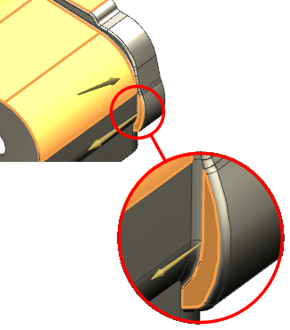
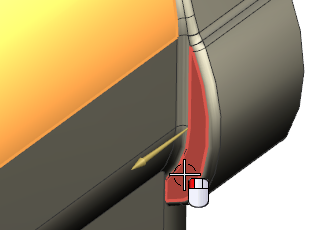
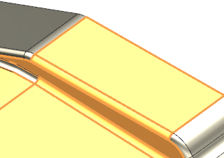
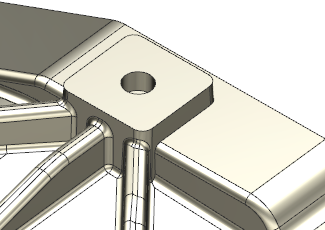

更新未解决的面
-
在部件导航器中，展开部件模块 “Frame Mount”节点。
-
查看部件导航器，注意到在输入收集器中，抽取的面试第一个被抑制的特征。
-
双击抽取的面以打开它进行编辑。
将出现一个警报信息，以通知您高亮显示的面定义了多个体，高亮显示的面将不再连续，您需要使定义部件模块输入的面再次连续。

-
按住 Shift 并选择如图所示的面。

-
选择如图所示的三个面。


-
点击确定以更新抽取的面。
一旦部件模块中的抽取的面进行更新，所有下游特征也都将进行更新。

-
关闭所有部件。